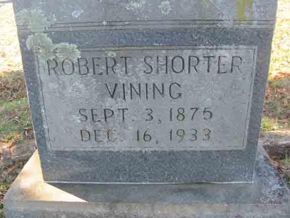
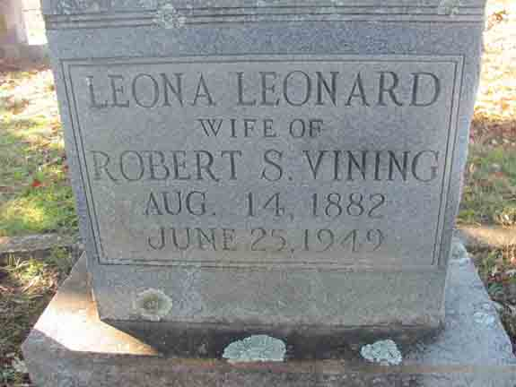

Census Data
| 1910 | 1920 | 1930 | 1940 | |
| Robert Shorter Vining | 36 | 45 | 57 | ? |
| Leona (Leonard) Vining | 26 | 38 | 49 | ? |
| Reginald Arthur “Rex” Vining | 9 | 19 | married and living in separate household | |
| Louis D. Vining | 7 | 17 | [living? in separate household] | |
| Bertha O. Vining | 5 | 15 | [living? in separate household] | |
| Clinton Mark Vining | 3 | 13 | 22 | ? |
| Robert Luke Vining | [9?] m. | 10 | 20 | ? |
| Mary A. Vining | 8 | 18 | ? | |
| Annie D. Vining | 5 | 16 | ? | |
| Stella Vining | 3 | 13 | ? | |
| Lucy E. Vining | 9 |


Death Data
Gravestones for Robert Shorter Vining and Leona (Leonard) Vining, in West Hill Cemetery, Dalton, Whitfield County, Georgia (from Find A Grave):
